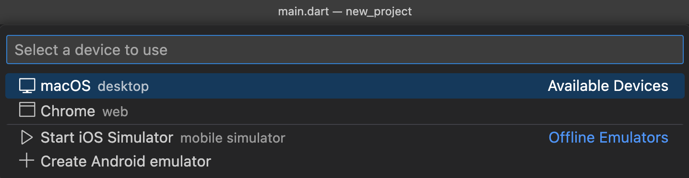
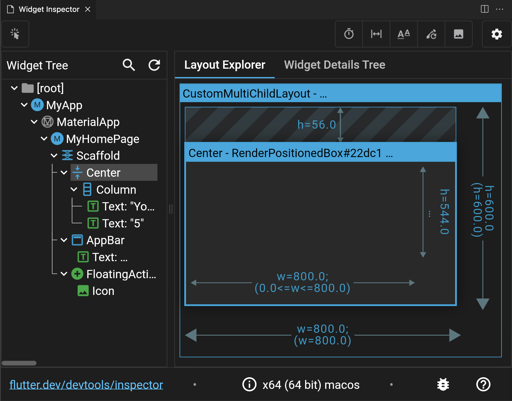
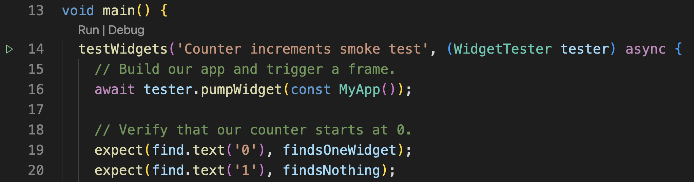
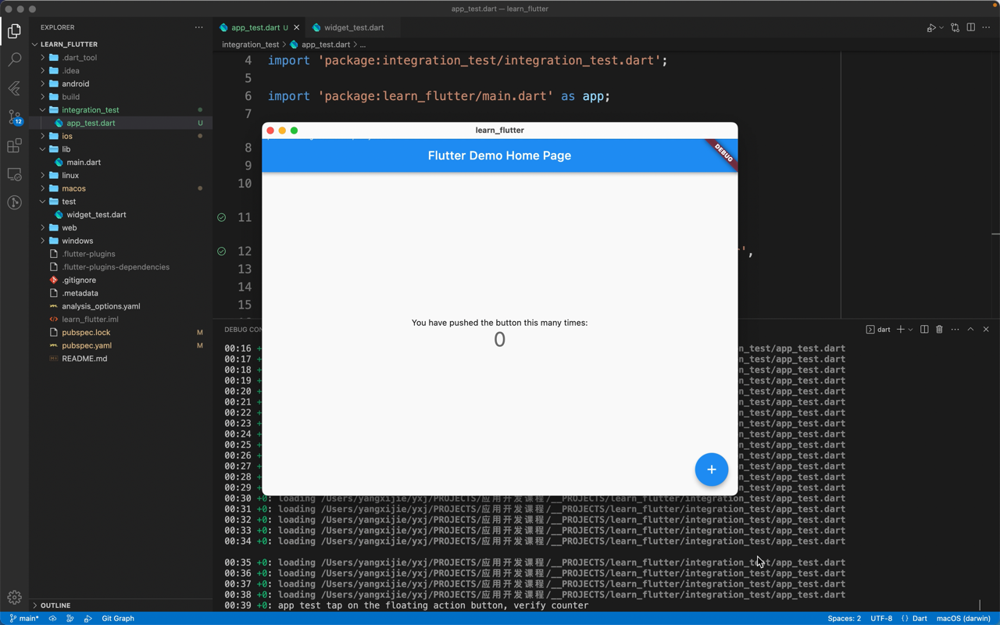
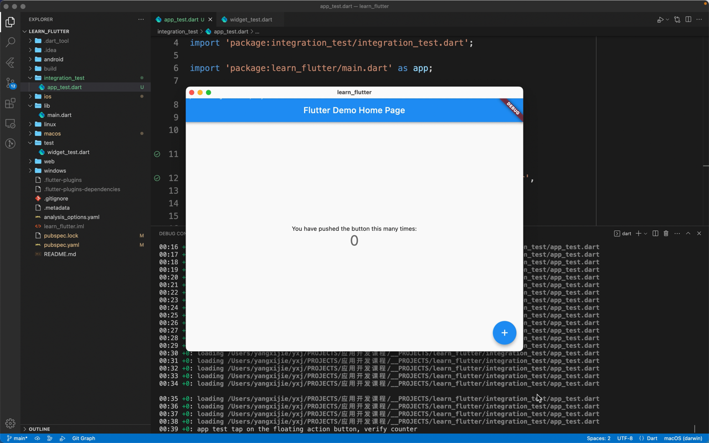

调试与测试¶
调试¶
什么是调试呢？调试是指在程序运行的过程中查看程序的状态，从而发现可能出现问题的代码。调试有很多种方法，但本质上都是在代码或者程序中插入一些开发者可以控制的行为，进一步对程序的执行进行检测和调整。
debugPrint¶
最简单的调试方式就是 print 调试法了。在 Flutter 程序中，更推荐的 print 方式是 debugPrint():
| Dart | |
|---|---|
1 | |
Prints a message to the console, which you can access using the "flutter" tool's "logs" command ("flutter logs").
输入为 String，要想输出一个对象，使用字符串插值即可。
MaterialApp¶
如果你使用了 MaterialApp，其中也有一些方便调试的参数：
debugShowCheckedModeBanner可以控制右上角表示调试的标志是否出现debugShowMaterialGrid可以显示 Material Design 的网格showSemanticsDebugger不显示 UI 而显示每个元素的外框和意义


断点调试¶
使用断点调试也是很方便的调试方法。接下来我们介绍使用 VS Code 添加断点调试 Flutter 应用的方法。
使用 flutter create new_project 新建一个默认的点击按钮显示的数字加一的 Flutter 工程，使用 VS Code 打开这个工程。
我们可以打开 lib/main.dart，在 L53 的 _incrementCounter() 中的 _counter++; 前（L60）后（L61）各添加一个断点（在行号前点击即可添加断点、再次点击可以删除）。
在 VS Code 最右下角的地方可以选择调试使用的设备：

然后使用快捷键 F5 或者在菜单栏里面点击「开始调试」（注意不是使用命令行的 flutter run）：

可以看到左侧的 VARIABLES 中显示出了现在应用中的变量，在 WATCH 处则可以添加自己感兴趣的监控的值（当这些值发生变化时会被高亮出来）。在左侧的 CALL STACK 可以看到全部的调用堆栈，在 BREAKPOINTS 中可以看到添加的所有断点，在程序调试的过程中你也可以对断点进行调整。
调试界面上方出现的七个按钮分别是：
- Pause (F6) Continue (F5)
- Step Over (F10)
- Step Into (F11)
- Step Out (shift F11)
- Hot Reload (ctrl F5)
- Restart (sft ctrl F5)
- Stop (sft F5)
- Open DevTools Widget Inspector Page
最后一个 Inspector 打开之后可以看待界面的布局和组件的树状结构：

感兴趣的同学可以在官网查看 Flutter | Using the Flutter inspector 了解 Inspector 的更多使用方法。
Layout 调试¶
想要获得一个简单的 Inspector 调试效果，也可以在代码的 main() 中添加 debugPaintSizeEnabled = true;：
https://docs.flutter.dev/development/tools/devtools/inspector#show-guidelines
| Dart | |
|---|---|
1 2 3 4 5 | |

其他资源¶
上面所说的方式基本上足够满足普通的调试需求了，如果你希望了解更多的调试方式，可以查阅下面两篇文章：
测试¶
测试在软件开发的过程中起着非常重要的作用，程序员很难保证每一行代码、每一个函数、每一个功能不出问题，因此需要对每个模块进行测试；在发布前为了确保应用不出现闪退或功能异常的情况，对应用整体也会进行测试。最常见的测试方式就是每次 flutter run 之后打开程序实际使用查看功能是否都正常。但是当你的应用越来越大，手动去做测试也是越来越难。
Dart 和 Flutter 也支持了很多与代码集成的自动化测试的方式，自动化的测试能够在确保新功能添加和修复 bug 的速度的基础上帮助你在发布应用前确保应用执行正确。
Dart / Flutter 聚焦于以下的三种测试：
- 单元测试（unit tests）：测试程序的最小部分（如一个函数、方法或类）。
- 组件测试（component / Widget tests）：测试一个组件（一般由多个类组成）是否正常工作 / 测试一个 Widget 的界面和交互正常。
- 整体和端到端测试（integration / end-to-end / GUI tests）：测试应用整体或者大部分的表现（如性能），这类测试往往会运行在虚拟机或实际的物理设备上。
Dart 测试主要参考内容：
我们一般会使用 package:test 向代码中添加测试的部分，然后用 dart test 这个命令启动测试。你可以查看这个包的 README 来了解简单的测试方式。由于这部分并不是课程重点，且在后面的 Flutter 测试部分我们讲的内容和 Dart 的测试高度重叠，所以这里不做讲解。
Flutter 测试主要参考内容：
下面我们会结合一些案例来讲解如何对一个 Flutter 工程进行测试——
如果你希望一个更加完整的案例，也可以查看 Codelabs | How to test a Flutter app。
单元测试¶
使用 flutter create learn_flutter 创建一个名为 learn_flutter 的项目，使用编辑器打开。
在 pubspec.yaml 的 dev_dependencies 中添加 test：
| Text Only | |
|---|---|
1 2 3 | |
创建如下两个文件：
lib/counter.dart:
| Dart | |
|---|---|
1 2 3 4 5 | |
test/counter_test.dart:
| Dart | |
|---|---|
1 2 3 4 5 6 7 8 9 10 | |
在 test 文件夹下，我们可以根据测试的目的新建很多个测试文件。这里我们新建 counter_test.dart，里面调用 test() 这个函数，第一个 dynamic description 参数传入测试的内容，第二个 dynamic Function() body 参数传入要测试的函数。这样我们就写好了一个测试样例。当进行测试时，这个文件中的 main() 会作为一个 Dart 程序被执行，从而得到测试结果。
在命令行执行 flutter test test/counter_test.dart:
| Text Only | |
|---|---|
1 2 3 4 5 | |
看到 All tests passed! 说明 test/counter_test.dart 这个文件对应的测试都已经通过。
我们可以修改 lib/counter.dart 中的 increment() 使每次调用 counter += 2;；或者修改 test/counter_test.dart，重复 counter.increment(); 这行代码（加两次）。之后再次执行 flutter test test/counter_test.dart，会得到类似下面呈现的报错：
| Text Only | |
|---|---|
1 2 3 4 5 6 7 8 9 10 11 12 13 14 15 | |
看到 Some tests failed. 说明有一些测试样例未通过。这时我们就要查看代码是不是哪里出现了问题（当然也有可能是测试样例有问题）我们需要对应进行修改。
我们也可以使用 group 将多个测试样例成组。与 test() 类似，group() 的前两个参数是 dynamic description 和 dynamic Function() body：
| Dart | |
|---|---|
1 2 3 4 5 6 7 8 9 10 11 12 13 14 15 16 17 18 19 20 21 22 | |
| Text Only | |
|---|---|
1 2 | |
以上提到的单元测试是最简单的一些内容，如果你希望了解更多，可以查看 test 这个测试包。
组件测试¶
我们也是使用 flutter create learn_flutter 来创建一个点击按钮加加的 Flutter 默认模板应用。不做任何修改：
可以看到 pubspec.yaml 的 dev_dependencies 中添加了 flutter_test；与 test 相比，flutter_test 添加了对 Widget 的测试：
| Text Only | |
|---|---|
1 2 3 4 | |
可以看到 test/widget_test.dart 中已经有了一些代码，在 main() 中调用 testWidgets()，其前两个参数为 String description 和 Future<void> Function(WidgetTester) callback，通过 callback 的参数拿到 tester WidgetTester，在函数体中就可以使用 tester 来进行测试了：
| Dart | |
|---|---|
1 2 3 4 5 6 7 8 9 10 11 12 13 14 | |
pumpWidget() 会构建传入的 Widget 并且（在测试环境）渲染出这个 Widget。之后我们主要使用 find() 来确定渲染得到的界面是否符合我们的预期，比如最开始应该只有一个呈现 0 的 Widget。
接下来我们调用 tester.tap()，模拟点击界面中的 FAB，再调用 tester.pump() 渲染一帧。这时，界面中应该有一个呈现 1 的 Widget。
我们可以在命令行使用 flutter test test/widget_test.dart 进行测试，看到 All tests passed! 说明测试成功。
我们也可以点击 VS Code 代码左侧的播放键来进行测试：

点击之后可以在下方的 Debug Console 处看到输出的信息：

在左侧的 TESTING panel 可以看到不同的测试样例的测试结果：

以上呈现的就是一个最简单的 Widget 测试。
关于更多 Widget 测试的示例，可以查阅：
- Cookbook Testing Widget | Find widgets
- Cookbook Testing Widget | Handle scrolling
- Cookbook Testing Widget | Tap, drag, and enter text
整体测试¶
首先我们需要在 pubspec.yaml 的 dev_dependencies 中添加 flutter_test 和 integration_test：
| Text Only | |
|---|---|
1 2 3 4 5 | |
接下来我们来编辑整体测试的文件。在项目的根目录新建文件夹 integration_test/（名称不可更改），在其中新建文件 app_test.dart（名称可更改），其中写入：
| Dart | |
|---|---|
1 2 3 4 5 6 7 8 9 10 11 12 13 14 15 16 17 18 19 20 21 22 23 24 25 26 27 28 29 30 | |
- 可以看到整体测试和 Widget 测试最大的区别是，调用了
IntegrationTestWidgetsFlutterBinding.ensureInitialized()。这个函数会初始化一些参数，使得之后的测试在目标机平台进行。 - 这里更新一帧主要使用
tester.pumpAndSettle()，它会持续调用tester.pump()知道没有新的帧要刷新，这会等待所有动画完成。 - 其他内容基本上与 Widget 测试一致。
在命令行，使用 flutter test integration_test/app_test.dart 即可执行整体测试：
| Text Only | |
|---|---|
1 2 3 4 5 6 7 8 | |
这里会提示选择一个设备，选择 Chrome 会提示 web 现在不支持整体测试。使用 ChromeDrive 看起来可以进行测试，感兴趣的同学可以参考 flutter/packages/integration_test 进行尝试。
这里我们使用 flutter test integration_test/app_test.dart -d mac 选择本机的其他平台进行测试。可以看到应用自动被构建，开启，执行测试，被关闭的过程。整个过程结束，测试结束。
 


以上所说的整体测试并没有对性能进行测试，对这方面感兴趣的同学可以课后查看 Cookbook Testing Integration | Performance profiling。
性能¶
https://docs.flutter.dev/perf
- What is performance?（什么是性能？）
- Why is performance important?（为什么性能很重要？）
- How do I improve performance?（我如何提升性能？）
关于前两个问题，详见 Flutter | Appendix: More thoughts about performance。简单来说，「性能（performance）」是「性能测试器（performer）」根据「性能标准（metric）」得到的一系列属性；「性能」提供给开发者一个相对客观准确的评价应用某些方面的方式。
关于第三个问题，首先需要测试出现有的性能，然后再考虑提升。Flutter 应用的性能主要有 Flutter | Performance metrics 所说的几项。简单来说有：
- 帧率（speed）
- Flutter 相当于一个渲染框架，类似游戏引擎，达到 60 帧或者更高的帧率是一个很重要的目标。
- 内存使用（memory）
- 应用包体大小（app size）
- 应用耗电量（energy）
测试的方法主要是依托官方推出的一些性能测试工具，在 Flutter | Performance profiling 中有详细的介绍。
对于提高应用性能，官网中给出了常见的一些问题和解答，以及提高应用性能的最佳实践，同时针对帧率和应用包体大小提出了具体的优化方法。这里给出官网中的相关链接，感兴趣的同学可以课下阅读：
- 常见问题 Flutter | Performance FAQ
- 最佳实践 Flutter | Performance best practices
- 优化帧率 Flutter | Improving rendering performance
- 优化包体大小 Flutter | Measuring your app's size
在实际的项目中，优化程序的性能可能并不会是从一开始就需要考虑的东西。你可以先开发一版应用程序，开发之后再进行整体测试，如果性能达不到项目要求，这时可以考虑再去优化。当然在实际的场景中，你可能还需要在多台不同的设备上进行测试，确保一些持有相对较早的机型的用户也能够有很好的体验。